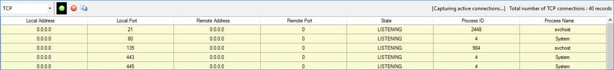

C# Sample to list all the active TCP and UDP connections using Windows Form appl
Introduction
The C# sample code developed in .NET Framework 4.0 would list the active TCP and UDP connections in a DataGridView. It shows information that describes an IPv4 TCP connection with IPv4 addresses, ports used by the TCP connection and the specific process ID PID) associated with connection along with the process name.
Building the Sample
Step 1: Open the "SocketConnection.sln" file using VS 2010 or above.
Step 2: Build the code by pressing "Ctrl+ Shift+ B" key combination.
Step 3: Execute the code either by clicking the F5 button or Ctrl + F5.
Using the Code
Below is the code snippet to retrieve all the active TCP and UDP connections.
GetAllTcpConnections() function
/// <summary>
/// This function reads and parses the active TCP socket connections available
/// and stores them in a list.
/// </summary>
/// <returns>
/// It returns the current set of TCP socket connections which are active.
/// </returns>
/// <exception cref="OutOfMemoryException">
/// This exception may be thrown by the function Marshal.AllocHGlobal when there
/// is insufficient memory to satisfy the request.
/// </exception>
private static List<TcpProcessRecord> GetAllTcpConnections()
{
int bufferSize = 0;
List<TcpProcessRecord> tcpTableRecords = new List<TcpProcessRecord>();
// Getting the size of TCP table, that is returned in 'bufferSize' variable.
uint result = GetExtendedTcpTable(IntPtr.Zero, ref bufferSize, true, AF_INET,
TcpTableClass.TCP_TABLE_OWNER_PID_ALL);
// Allocating memory from the unmanaged memory of the process by using the
// specified number of bytes in 'bufferSize' variable.
IntPtr tcpTableRecordsPtr = Marshal.AllocHGlobal(bufferSize);
try
{
// The size of the table returned in 'bufferSize' variable in previous
// call must be used in this subsequent call to 'GetExtendedTcpTable'
// function in order to successfully retrieve the table.
result = GetExtendedTcpTable(tcpTableRecordsPtr, ref bufferSize, true,
AF_INET, TcpTableClass.TCP_TABLE_OWNER_PID_ALL);
// Non-zero value represent the function 'GetExtendedTcpTable' failed,
// hence empty list is returned to the caller function.
if (result != 0)
return new List<TcpProcessRecord>();
// Marshals data from an unmanaged block of memory to a newly allocated
// managed object 'tcpRecordsTable' of type 'MIB_TCPTABLE_OWNER_PID'
// to get number of entries of the specified TCP table structure.
MIB_TCPTABLE_OWNER_PID tcpRecordsTable = (MIB_TCPTABLE_OWNER_PID)
Marshal.PtrToStructure(tcpTableRecordsPtr,
typeof(MIB_TCPTABLE_OWNER_PID));
IntPtr tableRowPtr = (IntPtr)((long)tcpTableRecordsPtr +
Marshal.SizeOf(tcpRecordsTable.dwNumEntries));
// Reading and parsing the TCP records one by one from the table and
// storing them in a list of 'TcpProcessRecord' structure type objects.
for (int row = 0; row < tcpRecordsTable.dwNumEntries; row++)
{
MIB_TCPROW_OWNER_PID tcpRow = (MIB_TCPROW_OWNER_PID)Marshal.
PtrToStructure(tableRowPtr, typeof(MIB_TCPROW_OWNER_PID));
tcpTableRecords.Add(new TcpProcessRecord(
new IPAddress(tcpRow.localAddr),
new IPAddress(tcpRow.remoteAddr),
BitConverter.ToUInt16(new byte[2] {
tcpRow.localPort[1],
tcpRow.localPort[0] }, 0),
BitConverter.ToUInt16(new byte[2] {
tcpRow.remotePort[1],
tcpRow.remotePort[0] }, 0),
tcpRow.owningPid, tcpRow.state));
tableRowPtr = (IntPtr)((long)tableRowPtr + Marshal.SizeOf(tcpRow));
}
}
catch (OutOfMemoryException outOfMemoryException)
{
MessageBox.Show(outOfMemoryException.Message, "Out Of Memory",
MessageBoxButtons.OK, MessageBoxIcon.Stop);
}
catch (Exception exception)
{
MessageBox.Show(exception.Message, "Exception",
MessageBoxButtons.OK, MessageBoxIcon.Stop);
}
finally
{
Marshal.FreeHGlobal(tcpTableRecordsPtr);
}
return tcpTableRecords != null ? tcpTableRecords.Distinct()
.ToList<TcpProcessRecord>() : new List<TcpProcessRecord>();
}
/// <summary>/// This function reads and parses the active TCP socket connections available/// and stores them in a list./// </summary>/// <returns>/// It returns the current set of TCP socket connections which are active./// </returns>/// <exception cref="OutOfMemoryException">/// This exception may be thrown by the function Marshal.AllocHGlobal when there/// is insufficient memory to satisfy the request./// </exception>privatestatic List<TcpProcessRecord> GetAllTcpConnections() { int bufferSize = 0; List<TcpProcessRecord> tcpTableRecords = new List<TcpProcessRecord>(); // Getting the size of TCP table, that is returned in 'bufferSize' variable.uint result = GetExtendedTcpTable(IntPtr.Zero, ref bufferSize, true, AF_INET, TcpTableClass.TCP_TABLE_OWNER_PID_ALL); // Allocating memory from the unmanaged memory of the process by using the// specified number of bytes in 'bufferSize' variable. IntPtr tcpTableRecordsPtr = Marshal.AllocHGlobal(bufferSize); try { // The size of the table returned in 'bufferSize' variable in previous// call must be used in this subsequent call to 'GetExtendedTcpTable'// function in order to successfully retrieve the table. result = GetExtendedTcpTable(tcpTableRecordsPtr, ref bufferSize, true, AF_INET, TcpTableClass.TCP_TABLE_OWNER_PID_ALL); // Non-zero value represent the function 'GetExtendedTcpTable' failed,// hence empty list is returned to the caller function.if (result != 0) returnnew List<TcpProcessRecord>(); // Marshals data from an unmanaged block of memory to a newly allocated// managed object 'tcpRecordsTable' of type 'MIB_TCPTABLE_OWNER_PID'// to get number of entries of the specified TCP table structure. MIB_TCPTABLE_OWNER_PID tcpRecordsTable = (MIB_TCPTABLE_OWNER_PID) Marshal.PtrToStructure(tcpTableRecordsPtr, typeof(MIB_TCPTABLE_OWNER_PID)); IntPtr tableRowPtr = (IntPtr)((long)tcpTableRecordsPtr + Marshal.SizeOf(tcpRecordsTable.dwNumEntries)); // Reading and parsing the TCP records one by one from the table and// storing them in a list of 'TcpProcessRecord' structure type objects.for (int row = 0; row < tcpRecordsTable.dwNumEntries; row++) { MIB_TCPROW_OWNER_PID tcpRow = (MIB_TCPROW_OWNER_PID)Marshal. PtrToStructure(tableRowPtr, typeof(MIB_TCPROW_OWNER_PID)); tcpTableRecords.Add(new TcpProcessRecord( new IPAddress(tcpRow.localAddr), new IPAddress(tcpRow.remoteAddr), BitConverter.ToUInt16(newbyte[2] { tcpRow.localPort[1], tcpRow.localPort[0] }, 0), BitConverter.ToUInt16(newbyte[2] { tcpRow.remotePort[1], tcpRow.remotePort[0] }, 0), tcpRow.owningPid, tcpRow.state)); tableRowPtr = (IntPtr)((long)tableRowPtr + Marshal.SizeOf(tcpRow)); } } catch (OutOfMemoryException outOfMemoryException) { MessageBox.Show(outOfMemoryException.Message, "Out Of Memory", MessageBoxButtons.OK, MessageBoxIcon.Stop); } catch (Exception exception) { MessageBox.Show(exception.Message, "Exception", MessageBoxButtons.OK, MessageBoxIcon.Stop); } finally { Marshal.FreeHGlobal(tcpTableRecordsPtr); } return tcpTableRecords != null ? tcpTableRecords.Distinct() .ToList<TcpProcessRecord>() : new List<TcpProcessRecord>(); }
GetAllUdpConnections() function
/// <summary>
/// This function reads and parses the active UDP socket connections available
/// and stores them in a list.
/// </summary>
/// <returns>
/// It returns the current set of UDP socket connections which are active.
/// </returns>
/// <exception cref="OutOfMemoryException">
/// This exception may be thrown by the function Marshal.AllocHGlobal when there
/// is insufficient memory to satisfy the request.
/// </exception>
private static List<UdpProcessRecord> GetAllUdpConnections()
{
int bufferSize = 0;
List<UdpProcessRecord> udpTableRecords = new List<UdpProcessRecord>();
// Getting the size of UDP table, that is returned in 'bufferSize' variable.
uint result = GetExtendedUdpTable(IntPtr.Zero, ref bufferSize, true,
AF_INET, UdpTableClass.UDP_TABLE_OWNER_PID);
// Allocating memory from the unmanaged memory of the process by using the
// specified number of bytes in 'bufferSize' variable.
IntPtr udpTableRecordPtr = Marshal.AllocHGlobal(bufferSize);
try
{
// The size of the table returned in 'bufferSize' variable in previous
// call must be used in this subsequent call to 'GetExtendedUdpTable'
// function in order to successfully retrieve the table.
result = GetExtendedUdpTable(udpTableRecordPtr, ref bufferSize, true,
AF_INET, UdpTableClass.UDP_TABLE_OWNER_PID);
// Non-zero value represent the function 'GetExtendedUdpTable' failed,
// hence empty list is returned to the caller function.
if (result != 0)
return new List<UdpProcessRecord>();
// Marshals data from an unmanaged block of memory to a newly allocated
// managed object 'udpRecordsTable' of type 'MIB_UDPTABLE_OWNER_PID'
// to get number of entries of the specified TCP table structure.
MIB_UDPTABLE_OWNER_PID udpRecordsTable = (MIB_UDPTABLE_OWNER_PID)
Marshal.PtrToStructure(udpTableRecordPtr, typeof(MIB_UDPTABLE_OWNER_PID));
IntPtr tableRowPtr = (IntPtr)((long)udpTableRecordPtr +
Marshal.SizeOf(udpRecordsTable.dwNumEntries));
// Reading and parsing the UDP records one by one from the table and
// storing them in a list of 'UdpProcessRecord' structure type objects.
for (int i = 0; i < udpRecordsTable.dwNumEntries; i++)
{
MIB_UDPROW_OWNER_PID udpRow = (MIB_UDPROW_OWNER_PID)
Marshal.PtrToStructure(tableRowPtr, typeof(MIB_UDPROW_OWNER_PID));
udpTableRecords.Add(new UdpProcessRecord(new IPAddress(udpRow.localAddr),
BitConverter.ToUInt16(new byte[2] { udpRow.localPort[1],
udpRow.localPort[0] }, 0), udpRow.owningPid));
tableRowPtr = (IntPtr)((long)tableRowPtr + Marshal.SizeOf(udpRow));
}
}
catch (OutOfMemoryException outOfMemoryException)
{
MessageBox.Show(outOfMemoryException.Message, "Out Of Memory",
MessageBoxButtons.OK, MessageBoxIcon.Stop);
}
catch (Exception exception)
{
MessageBox.Show(exception.Message, "Exception",
MessageBoxButtons.OK, MessageBoxIcon.Stop);
}
finally
{
Marshal.FreeHGlobal(udpTableRecordPtr);
}
return udpTableRecords != null ? udpTableRecords.Distinct()
.ToList<UdpProcessRecord>() : new List<UdpProcessRecord>();
}
/// <summary>/// This function reads and parses the active UDP socket connections available/// and stores them in a list./// </summary>/// <returns>/// It returns the current set of UDP socket connections which are active./// </returns>/// <exception cref="OutOfMemoryException">/// This exception may be thrown by the function Marshal.AllocHGlobal when there/// is insufficient memory to satisfy the request./// </exception>privatestatic List<UdpProcessRecord> GetAllUdpConnections() { int bufferSize = 0; List<UdpProcessRecord> udpTableRecords = new List<UdpProcessRecord>(); // Getting the size of UDP table, that is returned in 'bufferSize' variable.uint result = GetExtendedUdpTable(IntPtr.Zero, ref bufferSize, true, AF_INET, UdpTableClass.UDP_TABLE_OWNER_PID); // Allocating memory from the unmanaged memory of the process by using the// specified number of bytes in 'bufferSize' variable. IntPtr udpTableRecordPtr = Marshal.AllocHGlobal(bufferSize); try { // The size of the table returned in 'bufferSize' variable in previous// call must be used in this subsequent call to 'GetExtendedUdpTable'// function in order to successfully retrieve the table. result = GetExtendedUdpTable(udpTableRecordPtr, ref bufferSize, true, AF_INET, UdpTableClass.UDP_TABLE_OWNER_PID); // Non-zero value represent the function 'GetExtendedUdpTable' failed,// hence empty list is returned to the caller function.if (result != 0) returnnew List<UdpProcessRecord>(); // Marshals data from an unmanaged block of memory to a newly allocated// managed object 'udpRecordsTable' of type 'MIB_UDPTABLE_OWNER_PID'// to get number of entries of the specified TCP table structure. MIB_UDPTABLE_OWNER_PID udpRecordsTable = (MIB_UDPTABLE_OWNER_PID) Marshal.PtrToStructure(udpTableRecordPtr, typeof(MIB_UDPTABLE_OWNER_PID)); IntPtr tableRowPtr = (IntPtr)((long)udpTableRecordPtr + Marshal.SizeOf(udpRecordsTable.dwNumEntries)); // Reading and parsing the UDP records one by one from the table and// storing them in a list of 'UdpProcessRecord' structure type objects.for (int i = 0; i < udpRecordsTable.dwNumEntries; i++) { MIB_UDPROW_OWNER_PID udpRow = (MIB_UDPROW_OWNER_PID) Marshal.PtrToStructure(tableRowPtr, typeof(MIB_UDPROW_OWNER_PID)); udpTableRecords.Add(new UdpProcessRecord(new IPAddress(udpRow.localAddr), BitConverter.ToUInt16(newbyte[2] { udpRow.localPort[1], udpRow.localPort[0] }, 0), udpRow.owningPid)); tableRowPtr = (IntPtr)((long)tableRowPtr + Marshal.SizeOf(udpRow)); } } catch (OutOfMemoryException outOfMemoryException) { MessageBox.Show(outOfMemoryException.Message, "Out Of Memory", MessageBoxButtons.OK, MessageBoxIcon.Stop); } catch (Exception exception) { MessageBox.Show(exception.Message, "Exception", MessageBoxButtons.OK, MessageBoxIcon.Stop); } finally { Marshal.FreeHGlobal(udpTableRecordPtr); } return udpTableRecords != null ? udpTableRecords.Distinct() .ToList<UdpProcessRecord>() : new List<UdpProcessRecord>(); }
Structures containing information that describes an IPv4 TCP and UDP connection with IPv4 addresses, ports used by the TCP/UDP connection and the specific process ID (PID) associated with connection.
TCP socket connection structures
/// <summary>
/// The structure contains information that describes an IPv4 TCP connection with
/// IPv4 addresses, ports used by the TCP connection, and the specific process ID
/// (PID) associated with connection.
/// </summary>
[StructLayout(LayoutKind.Sequential)]
public struct MIB_TCPROW_OWNER_PID
{
public MibTcpState state;
public uint localAddr;
[MarshalAs(UnmanagedType.ByValArray, SizeConst = 4)]
public byte[] localPort;
public uint remoteAddr;
[MarshalAs(UnmanagedType.ByValArray, SizeConst = 4)]
public byte[] remotePort;
public int owningPid;
}
/// <summary>
/// The structure contains a table of process IDs (PIDs) and the IPv4 TCP links that
/// are context bound to these PIDs.
/// </summary>
[StructLayout(LayoutKind.Sequential)]
public struct MIB_TCPTABLE_OWNER_PID
{
public uint dwNumEntries;
[MarshalAs(UnmanagedType.ByValArray, ArraySubType = UnmanagedType.Struct,
SizeConst = 1)]
public MIB_TCPROW_OWNER_PID[] table;
}
/// <summary>/// The structure contains information that describes an IPv4 TCP connection with/// IPv4 addresses, ports used by the TCP connection, and the specific process ID/// (PID) associated with connection./// </summary> [StructLayout(LayoutKind.Sequential)] publicstruct MIB_TCPROW_OWNER_PID { public MibTcpState state; publicuint localAddr; [MarshalAs(UnmanagedType.ByValArray, SizeConst = 4)] publicbyte[] localPort; publicuint remoteAddr; [MarshalAs(UnmanagedType.ByValArray, SizeConst = 4)] publicbyte[] remotePort; publicint owningPid; } /// <summary>/// The structure contains a table of process IDs (PIDs) and the IPv4 TCP links that/// are context bound to these PIDs./// </summary> [StructLayout(LayoutKind.Sequential)] publicstruct MIB_TCPTABLE_OWNER_PID { publicuint dwNumEntries; [MarshalAs(UnmanagedType.ByValArray, ArraySubType = UnmanagedType.Struct, SizeConst = 1)] public MIB_TCPROW_OWNER_PID[] table; }
UDP socket connection structures
/// <summary>
/// The structure contains an entry from the User Datagram Protocol (UDP) listener
/// table for IPv4 on the local computer. The entry also includes the process ID
/// (PID) that issued the call to the bind function for the UDP endpoint.
/// </summary>
[StructLayout(LayoutKind.Sequential)]
public struct MIB_UDPROW_OWNER_PID
{
public uint localAddr;
[MarshalAs(UnmanagedType.ByValArray, SizeConst = 4)]
public byte[] localPort;
public int owningPid;
}
/// <summary>
/// The structure contains the User Datagram Protocol (UDP) listener table for IPv4
/// on the local computer. The table also includes the process ID (PID) that issued
/// the call to the bind function for each UDP endpoint.
/// </summary>
[StructLayout(LayoutKind.Sequential)]
public struct MIB_UDPTABLE_OWNER_PID
{
public uint dwNumEntries;
[MarshalAs(UnmanagedType.ByValArray, ArraySubType = UnmanagedType.Struct,
SizeConst = 1)]
public UdpProcessRecord[] table;
}
/// <summary>/// The structure contains an entry from the User Datagram Protocol (UDP) listener/// table for IPv4 on the local computer. The entry also includes the process ID/// (PID) that issued the call to the bind function for the UDP endpoint./// </summary> [StructLayout(LayoutKind.Sequential)] publicstruct MIB_UDPROW_OWNER_PID { publicuint localAddr; [MarshalAs(UnmanagedType.ByValArray, SizeConst = 4)] publicbyte[] localPort; publicint owningPid; } /// <summary>/// The structure contains the User Datagram Protocol (UDP) listener table for IPv4/// on the local computer. The table also includes the process ID (PID) that issued/// the call to the bind function for each UDP endpoint./// </summary> [StructLayout(LayoutKind.Sequential)] publicstruct MIB_UDPTABLE_OWNER_PID { publicuint dwNumEntries; [MarshalAs(UnmanagedType.ByValArray, ArraySubType = UnmanagedType.Struct, SizeConst = 1)] public UdpProcessRecord[] table; }
To select the protocol click on the combo box present on the top left corner of the application screen and choose the desired option.
To start listening TCP / UDP socket connections click on the green color button  present on the top as a ToolStrip menu item.
present on the top as a ToolStrip menu item.
To stop listening TCP / UDP socket connections click on the red color button  present on the top as a ToolStrip menu item.
present on the top as a ToolStrip menu item.
To copy all the data populated in the DataGridView click on the copy button present on the top as a ToolStrip menu item which will save all the data in the Clipboard.
